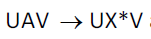

Számos tesztelési módszer a program forráskódjának elemzésén alapul. Ez az alpont a vonatkozó legfontosabb alapismereteket foglalja össze.
A programozási nyelvek egyik fontos jellemzője a szigorú szerkezet, a viszonylag egyszerűbb strukturáltság. Mindkét jellemző abból fakad, hogy olyan nyelvet lehet automatikus feldolgozásra, értelmezésre kiválasztani, amely
hatékonyan feldolgozható egy automatával;
elegendő kifejező ereje van az algoritmusok leírására.
A programnyelvek egy mesterséges nyelvnek tekinthetők, melyek teljesítik a fenti feltételeket. A programozási nyelvek elméleti hátterét a formális nyelvek területe fedi le.
Az formális nyelvek mondatok szavakból, jelekből történő felépítését írják le. Formálisan a formális nyelv egy párossal írható le, melyben adott az alapjelek halmaza és a képezhető, elfogadott mondatok halmaza. A mondatok halmaza az összes képezhető véges jelsorozatok halmazának részhalmazaként értelmezhető.
A nyelvek esetében egy nyelvtan írja le a jelhalmazból képzett és a nyelv által elfogadott mondatok halmazát. A nyelvtan leírja a mondatok képzési szabályait. A szabályok alapvetően
alakúak, ahol a szimbólumok mondat egységeket jelölnek. A szimbólumok vonatkozásában megkülönböztetünk
atomi szimbólumokat (ezek a jelek, a szigma halmaz elemei)
összetett szimbólumokat (nagyobb egységeket fog össze)
A nyelvtan formális alakja az alábbi kifejezéssel adható meg
G = (T, N, R, S)
ahol
T : atomi, terminális szimbólumok halmaza
N: összetett szimbólumok halmaza
R: szabályok halmaza
S: mondat szimbólum, mely az N eleme.
Az egyes nyelvtanok lényegesen különbözhetnek egymástól a szabályok összetettségét tekintve. A formális nyelvek nyelvtanának legismertebb osztályozási rendszere a Chomsky kategorizálás. A Chomsky hierarchia négy nyelvtan osztályt különböztet meg:
reguláris nyelvek: a szabályok
 alakúak;
alakúak;környezet függő nyelvek: a szabályok alakúak;
környezet függő nyelvek: a szabályok  alakúak;
általános nyelvek: nincs megkötés a szabályokra.
A kifejezésekben a kisbetűs elemek atomi szimbólumot, a nagybetűs elemek összetett szimbólumokat jelölnek. Az X egy tetszőleges szimbólum.
A programozási nyelvek alapvetően a reguláris nyelvek osztályába tartoznak. Egy SQL DELETE parancs esetében például az alábbi szabályokat kell alkalmazni, ahol a példában egy –egy szót is atomi szimbólumnak tekintünk.
S = delete R
R = from Q
Q = ?tabla P
Q = ?tabla
P = where O
O = ?feltétel
A mintában a ? jel mögött egy újabb egység van, melyhez önálló saját értelmezési nyelvtan tartozik.
A nyelvtan alapján egy bejövő mondathoz meghatározható, hogy illeszkedik-e a megadott nyelvtanra vagy sem. A reguláris nyelvtanok esetében az ellenőrzés egyik lehetséges eszköze egy FSA automata alkalmazása.
A véges automaták olyan rendszert jelentenek, mely tartalmaz
állapot elemeket (az elemzés egyes fázisait szimbolizálják)
állapot átmeneteket
eseményeket
Az események az egyes állapot átmenetekhez köthetők. Az automata működési elve az alábbi alapelemeken nyugszik:
induláskor egy induló állapotban van a rendszer
egy esemény bekövetkezésekor állapot átmenet valósul meg: az aktuális állapotból azon átmeneten megy tovább, melyhez a bejövő esemény tartozik
az automata egy végállapot elérésekor áll le
A szintaktika ellenőrzéskor a végállapot lehet egy elfogadó vagy egy elvető (hiba) állapot.
Az automaták a működés jellege szerint több csoportba kategorizálhatjuk, fő típusai:
véges automata
determinisztikus automata
fuzzy automata
Az előzőekben ismertetett reguláris nyelvek megvalósíthatók véges automatákkal így az értelmezés folyamata egy automatával végrehajtható. Az automata működési modellje egy táblázattal foglalható össze, melyben az alábbi oszlopok szerepelnek:
induló állapot
esemény
célállapot
Az esemény a forráskód elemzésénél a soron következő beolvasott jelet (szót) jelöli. A DELETE parancs esetében az alábbi táblázat alapján működhet az értelmező:

A táblázatban * jel jelöli az egyéb eseményeket és # jel a mondat vége eseménynek felel meg.
A szintaktikai elemzés azt vizsgálja, hogy a kód, mint mondatok sorozata érvényes-e, megfelel-e a nyelvtan szabályainak. A nyelvtanilag érvényes mondatsor azonban nem biztos, hogy az elvárt tartalmú tevékenységet végzi el. Emiatt a szintaktikai helyesség nem garantálja a tartalmi, szemantikai helyességet.
A szemantikai helyesség ellenőrzése sokkal összetettebb feladat, mint a szintaktika ellenőrzése, hiszen nem áll rendelkezésre olyan szemantikai nyelvtan, amellyel össze lehetne vetni a leírt kódot. A kód ugyan karaktersorozatnak fele meg a forrásállományban, de a tartalom szempontjából más egységek strukturálható. A kód szokásos reprezentációs alakjai:
szavak sorozata (szintaktikai ellenőrzéshez),
utasítások hierarchiája,
végrehajtási gráf.
A hierarchia reprezentáció arra utal, hogy a szavakból rendszerint egy nagyobb utasítás egység áll össze, és az utasítások legtöbbször egymásba ágyazhatók. A fontosabb algoritmus szerkezeti elemek:
modul (rutin)
szekvencia
elágazás
ciklus
A hierarchikus szerkezetet jelzi, hogy egy elágazás tartalmazhat
szekvenciát,
elágazást,
ciklust.
Tehát a program algoritmusa strukturálisan rekurzív felépítésű. A algoritmus megadása mellet a program másik fő egysége az adatstruktúra leírása. Az adatstruktúra esetében is ez hierarchikus szerkezettel találkozhatunk. A főbb adattárolási egységek:
skalár
tömb
halmaz
rekord
fa
Itt is igaz, hogy egyes egységek más adatelemeket magukba foglalhatnak.
A hierarchia reprezentáció a program statikus szerkezeté írja le, a program azonban egy végrehajtási szerkezet ad meg. A program hagyományos végrehajtása során mindig van egy kitüntetett utasítás, mely végrehajtás alatt áll. Ez az aktuális utasítás vándorol a program futása alatt. Egy adott utasításból egy vagy több más utasításba kerülhet át a vezérlés.
A végrehajtási gráf formalizmusban az egyes utasításokat mint csomópontokat vesszük, és a vezérlés átadásokat a gráf éleit szimbolizálják. A gráfban található egy jelölő elem, token, mely mutatja az aktuális utasítás helyét. A program futása jól nyomon követhető a gráfban a token mozgását követve. A gráf formalizmus tehát a program dinamikus jellegét mutatja.
A program helyességének biztosítása a szoftverfejlesztés egyik legfontosabb feladata. A tesztelés folyamata, mely során ellenőrzésre kerül a program helyessége sokféleképpen értelmezhető. A tesztelést végezhető szisztematikus próbálkozásokkal is, de ha nem sikerül minden lehetséges esetet lefedni, akkor ez a módszer nem garantálhatja a program teljeskörű helyességét. Csak olyam megoldás adhat biztonságot, amely bizonyíthatóan le tudja fedni a lehetséges eseteket. érezhető, ezen igényt csak egy matematikailag megalapozott módszer tudná biztosítani. érdekes kérdés, hogy van-e ilyen matematikai formalizmus és az vajon alkalmazható-e a gyakorlati méretű feladatokban. A következő részben a tesztelés formális megközelítésének alapjait tekintjük át röviden.
A formális tesztelés elméleti alapjait Hoare fektette le 1969-ben, bevezetve az axiomatikus szemantika terület fogalmát, melynek célja a programok viselkedésének leírása és helyességük bizonyítása.
Az axiomatikus szemantika alapvetően a matematikai logika eszközrendszerére épül és egyik alapeleme a megkötés, assertion fogalma. Az assertion egy olyan állítás, predikátum, amelyet a programnak valamely pontjában teljesítenie kell. A modell további lényeges elemei az előfeltételek (precondition) és az végfeltételek (postcondition). A módszer tehát nem önmagában vizsgálja a program helyességét, keretfeltételek mellett végzi az ellenőrzést. Felteszi, hogy indulás előtt igaz a precondition és végén teljesülnie kell a postcondition megkötésnek. A program tehát egy
{P} s {Q}
hármassal adott, ahol
P : precondition
s : source (forráskód)
Q: postcondition.
Természetesen a P és Q részek lehetnek mindig teljesülő kifejezések is. A Hoare formalizmus célja a program részleges helyességének ellenőrzése, tehát annak bizonyítása, hogy ha P teljesül, akkor az s végrehajtása után Q is teljesülni fog.
A módszer a matematikai logika eszközrendszerére alapozva P-ből kiindulva az s elemeinek felhasználásával levezeti a Q helyességét. A levezetés logikában megszokott implikációs szabályokra épít, melyeket
alakban lehet megadni és azt jelzi, hogy ha teljesülnek a p1,p2,p3 … logikai kifejezések, akkor a q állítás is teljesül. A levezetési szabályok egy s program esetén az alábbi típusokat fedik le:
hozzárendelés (assignment rule)
szekvencia (sequence rule)
ugrás (skip rule)
feltételes elágazás (conditional rule)
ciklus (loop rule)
Mivel a Q levezetése a P-ből több lépésen keresztül történhet csak, a bizonyítás egy levezetési fával írható le.
Példaként a feltételes utasításhoz tartozó szabályt véve, az implikáció a következő alakot ölti:
A feldolgozás egy további eleme a feltételek erősítése vagy gyengítése. A precondition erősítése formalizmusa:
Például ez alapján vezethető le az alábbi összefüggés:
A fenti példákból is jól látható, hogy a Hoare formalizmus a helyesség ellenőrzését igen absztrakt szinten végzi és igen körülményes és költséges a levezetési fa felépítése. Emiatt a módszert napjainkban még csak kisebb méretű feladatoknál alkalmazzák és a gyakorlati rendszerekben döntően a heurisztikus módszerek dominálnak.